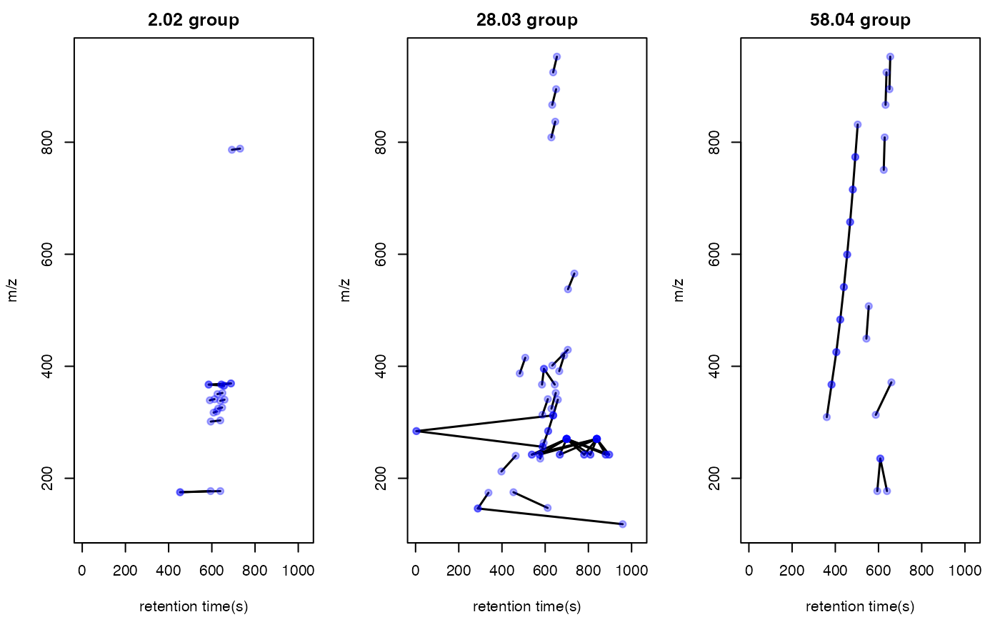
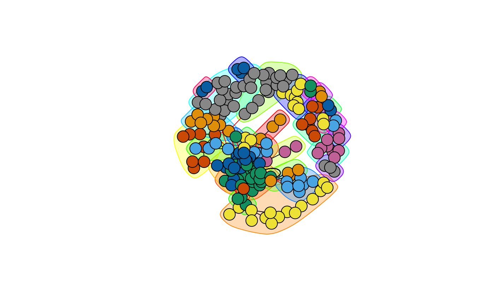

Paired Mass Distance(PMD) analysis for GC/LC-MS based non-targeted analysis
Miao Yu
2019-07-22
globalstd.RmdIntroduction of Paired Mass Distance analysis
pmd package use Paired Mass Distance (PMD) relationship to analysis the GC/LC-MS based non-targeted data. PMD means the distance between two masses or mass to charge ratios. In mass spectrometry, PMD would keep the same between two masses or two mass to charge ratios(m/z). There are twe kinds of PMD involved in this package: PMD within same retention time group and PMD from different retention time groups.
PMD within same retention time group
In GC/LC-MS based non-targeted analysis, peaks could be seperated by chromatograph. We could build retention time(RT) bins to assign peaks into different RT groups by retention time hierarchical clustering analysis. For each RT group, the peaks should come from same compounds or co-elutes. If certain PMD appeared in multiple RT groups, it would be related to the relationship about adducts, neutral loss, isotopologues or commen fragments ions.
PMD from different retention time groups
The peaks from different retention time groups would like to be different compounds seperated by chromatograph. The PMD would reflect the relationship about homologous series or chemical reactions.
GlobalStd algorithm use the PMD within same RT group to find independent peaks among certain dataset. Structure/reaction directed analysis use PMD from different RT groups to screen important compounds or reactions.
Data format
The input data should be a list object with at least two elements from a peaks list:
- mass to charge ratio with name of
mz, high resolution mass spectrometry is required - retention time with name of
rt
However, I suggested to add intensity and group information to the list for validation of PMD analysis.
In this package, a dataset from in vivo solid phase micro-extraction(SPME) was attached. This dataset contain 9 samples from 3 fish with triplicates samples for each fish. Here is the data strcture:
library(pmd)
data("spmeinvivo")
str(spmeinvivo)
#> List of 4
#> $ data : num [1:1459, 1:9] 1095 10439 10154 2797 90211 ...
#> ..- attr(*, "dimnames")=List of 2
#> .. ..$ : chr [1:1459] "100.1/170" "100.5/86" "101/85" "103.1/348" ...
#> .. ..$ : chr [1:9] "1405_Fish1_F1" "1405_Fish1_F2" "1405_Fish1_F3" "1405_Fish2_F1" ...
#> $ group: chr [1:9] "fish1" "fish1" "fish1" "fish2" ...
#> $ mz : num [1:1459] 100 101 101 103 104 ...
#> $ rt : num [1:1459] 170.2 86.3 84.9 348.1 48.8 ...You could build this list object from the xcms objects via enviGCMS package. When you have a xcmsSet object or XCMSnExp object named xset, you could use enviGCMS::getmzrt(xset) or enviGCMS::getmzrt2(xset) to get such list. Of course you could build such list by yourself.
GlobalStd algorithm
GlobalStd algorithm try to find independent peaks among certain peaks list. The first step is retention time hierarchical clustering analysis. The second step is to find the relationship among adducts, neutral loss, isotopologues and commen fragments ions. The third step is to screen the independent peaks.
Retention time hierarchical clustering
pmd <- getpaired(spmeinvivo, rtcutoff = 10, ng = 10)
#> 75 retention time cluster found.
#> 435 paired masses found
#> 10 unique within RT clusters high frequency PMD(s) used for further investigation.
#> 583 isotopologue(s) related paired mass found.
#> 685 multi-charger(s) related paired mass found.
plotrtg(pmd)
This plot would show the distribution of RT groups. The rtcutoff in function getpaired could be used to set the cutoff of the distances in retention time hierarchical clustering analysis.
Relationship among adducts, neutral loss, isotopologues and commen fragments ions
The ng in function getpaired could be used to set cutoff of global PMD’s retention time group numbers. If ng is 10, at least 10 of the retention time groups should contain the shown PMD relationship. You could use plotpaired to show the distribution.

You could also show the distribution of PMD relationship by index:
# show the unique PMD found by getpaired function
for(i in 1:length(unique(pmd$paired$diff2))){
diff <- unique(pmd$paired$diff2)[i]
index <- pmd$paired$diff2 == diff
plotpaired(pmd,index)
}


Screen the independent peaks
You could use getstd function to get the independent peaks.
std <- getstd(pmd)
#> 11 group(s) with multiple peaks while no isotope/paired relationship
#> 8 group(s) with multiple peaks with isotope without paired relationship
#> 4 group(s) with paired relationship without isotope
#> 44 group(s) with paired relationship and isotope
#> 257 std mass found.
#> 8 retention group(s) have single peaks.Here you could plot the peaks by plotstd function to show the distribution of independent peaks:

You could also plot the peaks distribution by assign a retention time group via plotstdrt:
par(mfrow = c(2,3))
plotstdrt(std,rtcluster = 23,main = 'Retention time group 23')
plotstdrt(std,rtcluster = 9,main = 'Retention time group 9')
plotstdrt(std,rtcluster = 18,main = 'Retention time group 18')
plotstdrt(std,rtcluster = 67,main = 'Retention time group 67')
plotstdrt(std,rtcluster = 49,main = 'Retention time group 49')
plotstdrt(std,rtcluster = 6,main = 'Retention time group 6')
Use independent peaks for MS/MS validation
Independent peaks are supporsing generated from different compounds. We could use those peaks for MS/MS analysis instead of DIA or DDA. Here we need multiple injections for one sample since it might be impossible to get all ions’ fragmental ions in one injection with good sensitivity. You could use gettarget to generate the index for the injections and output the peaks for each run.
# you need retention time for independent peaks
index <- gettarget(std$rt[std$stdmassindex])
#> You need 6 injections!
# output the ions for each injection
table(index)
#> index
#> 1 2 3 4 5 6
#> 49 35 52 35 36 50
# show the ions for the first injection
std$mz[index==1]
#> [1] 106.9509 110.0092 118.0873 132.0779 135.1168 136.4826 137.0472
#> [8] 138.0549 141.9594 143.9602 145.0358 145.9553 152.0578 154.9677
#> [15] 155.1294 155.1295 156.0426 156.0776 156.9622 159.1575 161.0713
#> [22] 162.0558 163.1487 166.4658 167.0134 167.0901 170.0931 172.1705
#> [29] 175.0873 175.1481 177.1640 181.1597 188.6484 192.1380 210.1577
#> [36] 213.2050 215.1272 217.1483 217.6492 219.0540 226.9523 227.9565
#> [43] 235.1692 236.1730 237.2228 242.2863 242.2863 242.2863 242.9260
#> [50] 251.0008 251.0476 255.2511 259.9651 261.2214 262.1453 262.1656
#> [57] 264.1944 267.1772 267.2693 267.9535 268.1893 270.3185 270.3185
#> [64] 270.3185 270.3185 270.3185 270.3185 270.3185 271.3217 271.3216
#> [71] 272.0665 273.1685 277.0970 277.1418 277.1817 279.2697 281.0519
#> [78] 283.3000 284.2956 285.3002 286.3101 293.2853 295.9069 309.2279
#> [85] 310.9380 311.3144 312.0163 312.3261 313.1439 319.9302 321.3165
#> [92] 328.0132 329.0052 329.2492 335.1258 336.3259 337.1058 337.8946
#> [99] 340.7613 341.0180 349.0556 352.9085 354.2845 355.3391 356.3423
#> [106] 357.8170 361.2353 361.3266 362.3032 362.9280 365.3023 366.3006
#> [113] 367.3375 367.3373 368.3395 368.3904 370.3330 372.3478 375.2147
#> [120] 377.2696 378.9015 383.1282 383.1414 383.2804 385.2753 386.2783
#> [127] 392.2873 392.3135 394.4045 398.2762 401.3421 404.2360 419.3519
#> [134] 422.2952 425.3120 426.2189 426.3146 427.1184 431.0687 432.0690
#> [141] 439.2698 442.3376 442.8446 446.1216 447.9910 448.2959 449.2874
#> [148] 463.1472 463.3975 478.8354 493.3138 494.8112 494.8112 494.8113
#> [155] 496.3410 501.2808 501.3829 502.2931 502.3382 506.3375 508.3041
#> [162] 512.4158 514.8764 516.3893 517.8314 519.1401 522.3557 525.9831
#> [169] 527.1586 530.8496 534.9708 535.4718 537.1654 538.3435 539.5420
#> [176] 543.3280 544.3398 547.5201 555.2922 560.2193 561.4023 580.2907
#> [183] 582.3700 584.8611 585.4215 586.4524 587.8828 598.8366 600.8824
#> [190] 608.8745 613.1827 614.1816 620.6167 625.3928 628.1949 630.7621
#> [197] 639.8539 640.1961 651.8520 663.4529 664.4627 665.4606 665.8615
#> [204] 669.4185 675.6790 676.2120 676.6791 676.8604 680.4633 683.5412
#> [211] 685.2035 685.3464 690.3683 690.6403 691.6443 696.5070 698.7711
#> [218] 702.1381 703.2147 704.8667 705.1376 707.6675 708.8218 710.2184
#> [225] 718.8373 719.9400 727.4611 731.8438 738.5066 744.8477 773.3274
#> [232] 775.8295 778.8378 779.3404 779.5153 780.8078 790.5377 792.3470
#> [239] 801.4967 803.5434 804.8442 812.8331 816.5102 820.8196 825.6769
#> [246] 836.6816 837.5278 846.8256 860.3354 862.7985 864.3202 866.3142
#> [253] 868.4448 872.8054 872.8314 873.3057 873.3343 878.3781 880.8217
#> [260] 883.7184 884.1633 884.8301 886.7613 888.8064 896.7943 900.8085
#> [267] 904.8150 907.4933 914.8115 915.3139 916.7821 922.7991 925.4477
#> [274] 938.7728 940.8177 942.7638 947.7443 964.7811 973.4945
std$rt[index==1]
#> [1] 216.1970 1079.6500 165.6830 212.6550 639.3135 144.8960 161.8250
#> [8] 511.2940 1079.4300 85.4930 48.6340 85.3855 219.5120 70.2770
#> [15] 804.4690 785.8260 218.6020 227.6550 145.5380 470.3640 389.9630
#> [22] 430.6780 612.9110 144.0560 76.2780 511.2940 226.0540 478.9360
#> [29] 511.2940 614.4130 639.3140 615.0530 639.2075 462.2210 611.4130
#> [36] 594.9115 169.7485 638.8870 639.3130 169.5380 1029.1800 213.7270
#> [43] 576.9100 576.9100 639.1010 631.5560 747.3660 780.5760 216.0600
#> [50] 509.7940 605.8400 639.1000 145.9660 556.7660 491.1510 408.3895
#> [57] 473.1445 416.1050 633.3765 146.3950 452.5345 880.3720 572.8400
#> [64] 604.7690 838.9070 767.5050 823.9060 681.3155 744.1460 781.0040
#> [71] 141.0400 336.5620 169.5500 482.5790 491.1510 639.1000 762.5750
#> [78] 679.6010 3.9535 564.8035 732.0395 618.2710 145.0030 360.5630
#> [85] 145.6800 618.4830 212.8675 636.9570 581.3045 145.2280 639.1000
#> [92] 509.1510 509.3650 596.4120 581.4100 594.9125 543.4380 145.4960
#> [99] 172.7590 717.1835 136.3250 144.0390 749.9320 594.4820 594.4830
#> [106] 639.0990 550.5530 639.0970 613.1270 213.9270 639.0990 561.9110
#> [113] 644.2420 585.2700 644.2430 682.3870 551.8380 523.5950 218.8600
#> [120] 557.8390 215.8460 577.9840 605.5200 547.0180 493.0800 493.3975
#> [127] 665.0280 551.6260 682.3135 492.2220 632.8410 601.4480 656.0290
#> [134] 639.5290 404.7480 601.1275 404.5330 519.0090 762.3630 762.3610
#> [141] 639.3130 656.2430 643.3840 717.1020 212.6570 404.7480 543.8650
#> [148] 717.0775 582.3755 218.1010 540.6520 817.9060 803.7190 782.9350
#> [155] 536.5800 477.4360 422.9630 492.2230 511.5080 423.1770 532.7230
#> [162] 550.3385 215.7020 540.8620 144.7890 762.3620 546.4830 639.0980
#> [169] 142.3240 217.0145 639.0995 639.3130 762.5740 537.2240 705.4235
#> [176] 492.4360 511.2270 627.8060 512.7070 340.9965 546.8030 508.5080
#> [183] 534.0090 215.7865 434.7490 439.2500 213.5090 216.9670 213.5090
#> [190] 213.9410 819.1920 818.8705 618.4850 530.7950 642.7435 145.1850
#> [197] 214.1780 818.9790 215.7110 800.2900 527.7950 800.2900 213.3840
#> [204] 527.7950 638.8870 819.4080 638.8870 214.3560 468.4360 551.4100
#> [211] 883.1575 215.9255 213.1890 594.0550 594.0560 698.6730 218.0975
#> [218] 639.1005 663.7645 213.9270 639.2070 594.4830 214.8000 883.9070
#> [225] 215.4870 212.6510 538.8305 214.1480 481.2930 214.3560 370.5620
#> [232] 214.1480 214.5700 214.9615 519.6690 214.7290 780.5760 213.4660
#> [239] 520.0790 665.0290 213.5090 214.4150 213.3340 215.2830 628.5550
#> [246] 646.6000 698.2460 214.4150 213.5055 215.8575 639.2070 213.3840
#> [253] 493.9370 639.1010 213.5090 639.2070 213.5480 381.9255 214.2320
#> [260] 632.1990 213.5090 213.5140 217.3700 215.0690 215.4870 213.7720
#> [267] 213.3595 213.0430 214.4360 214.9660 214.6500 215.2830 476.5790
#> [274] 216.4125 213.5480 636.9060 800.0770 215.6320 500.9015Validation by principal components analysis(PCA)
You need to check the GlobalStd algorithm’s results by principal components analysis(PCA).
library(enviGCMS)
par(mfrow = c(1,2),mar = c(4,4,2,1)+0.1)
plotpca(std$data,lv = as.numeric(as.factor(std$group)),main = substitute(paste(italic('in vivo'), " SPME samples(all peaks)")))
plotpca(std$data[std$stdmassindex,],lv = as.numeric(as.factor(std$group)),main = substitute(paste(italic('in vivo'), " SPME samples(selected peaks)")))
Comparision with other packages
GlobalStd algorithm in pmd package could be treated as a way to extract pseudospectra. You could use getcluster to get peaks groups information for all GlobalStd peaks. Then you could choose export peaks with the highest intensities in each GlobalStd peaks groups.
stdcluster <- getcluster(std)
# extract pseudospectra for std peak 1
plot(stdcluster$cluster$stdmassg[stdcluster$cluster$i==42],stdcluster$cluster$ins[stdcluster$cluster$i==42],type = 'h',xlab = 'm/z',ylab = 'intensity',main = 'pseudospectra for GlobalStd peak 42')
# export peaks with the highest intensities in each GlobalStd peaks groups.
data <- stdcluster$data[stdcluster$stdmassindex2,]You could also use getcorcluster to find peaks groups by correlation analysis only.
corcluster <- getcorcluster(spmeinvivo)
#> 75 retention time cluster found.
par(mfrow = c(1,3),mar = c(4,4,2,1)+0.1)
plotpca(std$data,lv = as.numeric(as.factor(std$group)),main = substitute(paste(italic('in vivo'), " SPME samples(all peaks)")))
plotpca(std$data[std$stdmassindex,],lv = as.numeric(as.factor(std$group)),main = substitute(paste(italic('in vivo'), " SPME samples(selected peaks)")))
plotpca(std$data[corcluster$stdmassindex,],lv = as.numeric(as.factor(std$group)),main = substitute(paste(italic('in vivo'), " SPME samples(selected peaks by correlationship)")))
GlobalStd algorithm with intensity data
GlobalStd algorithm is designed to analysis data without intensity data. However, if you have intensity data, the independant peaks could be selected with more confindence. You could set up cutoff of Pearson Correlation Coefficient between peaks to refine the peaks selected by GlobalStd within same retention time groups.
std2 <- getstd(pmd,corcutoff = 0.9)
#> 24 group(s) with multiple peaks while no isotope/paired relationship
#> 12 group(s) with multiple peaks with isotope without paired relationship
#> 3 group(s) with paired relationship without isotope
#> 28 group(s) with paired relationship and isotope
#> 116 std mass found.
#> 8 retention group(s) have single peaks.
par(mfrow = c(1,3),mar = c(4,4,2,1)+0.1)
plotpca(std2$data,lv = as.numeric(as.factor(std2$group)),main = substitute(paste(italic('in vivo'), " SPME samples(all peaks)")))
plotpca(std$data[std$stdmassindex,],lv = as.numeric(as.factor(std$group)),main = substitute(paste(italic('in vivo'), " SPME samples(selected peaks)")))
plotpca(std2$data[std2$stdmassindex,],lv = as.numeric(as.factor(std2$group)),main = substitute(paste(italic('in vivo'), " SPME samples(selected peaks)")))
Structure/Reaction directed analysis
getsda function could be used to perform Structure/reaction directed analysis. freqcutoff could be used to filter the PMD with high frequncy.
sda <- getsda(std, freqcutoff = 10)
#> Top 50 high frequency PMD groups were remained.
#> 18 groups were found as high frequency PMD group.
#> 0 were found as high frequency PMD.
#> 1.98 were found as high frequency PMD.
#> 2.02 were found as high frequency PMD.
#> 13.98 were found as high frequency PMD.
#> 14.02 were found as high frequency PMD.
#> 14.05 were found as high frequency PMD.
#> 15.99 were found as high frequency PMD.
#> 16.03 were found as high frequency PMD.
#> 28.03 were found as high frequency PMD.
#> 30.05 were found as high frequency PMD.
#> 42.05 were found as high frequency PMD.
#> 49.02 were found as high frequency PMD.
#> 58.04 were found as high frequency PMD.
#> 66.05 were found as high frequency PMD.
#> 68.06 were found as high frequency PMD.
#> 82.08 were found as high frequency PMD.
#> 116.08 were found as high frequency PMD.
#> 126.14 were found as high frequency PMD.You could use plotstdsda to show the distribution of the selected paired peaks.

You could also use index to show the distribution of certain PMDs.
par(mfrow = c(2,3),mar = c(4,4,2,1)+0.1)
plotstdsda(sda,sda$sda$diff2 == 0)
plotstdsda(sda,sda$sda$diff2 == 13.98)
plotstdsda(sda,sda$sda$diff2 == 15.99)
plotstdsda(sda,sda$sda$diff2 == 14.02)
plotstdsda(sda,sda$sda$diff2 == 28.03)
plotstdsda(sda,sda$sda$diff2 == 58.04)
Structure/reaction directed analysis could be directily performed on all the peaks, which is slow to process:
sdaall <- getsda(spmeinvivo)
par(mfrow = c(2,3),mar = c(4,4,2,1)+0.1)
plotstdsda(sdaall,sdaall$sda$diff2 == 0)
plotstdsda(sdaall,sdaall$sda$diff2 == 13.98)
plotstdsda(sdaall,sdaall$sda$diff2 == 15.99)
plotstdsda(sdaall,sdaall$sda$diff2 == 14.02)
plotstdsda(sdaall,sdaall$sda$diff2 == 28.03)
plotstdsda(sdaall,sdaall$sda$diff2 == 58.04)Structure/reaction directed analysis for peaks/compounds only
When you only have data of peaks without retention time or compounds list, structure/reaction directed analysis could also be done by getrda function.
Structure/Reaction Network
One peak or compounds could be involved in multiple reactions. You could construct a network by such relationship.
If you have a specific compound and want to check the metabolites of certain PMD, you could use getchain to extract the network of that compounds
library(igraph)
#>
#> Attaching package: 'igraph'
#> The following objects are masked from 'package:stats':
#>
#> decompose, spectrum
#> The following object is masked from 'package:base':
#>
#> union
# check metabolites of C18H39NO
chain <- getchain(spmeinvivo,diff = c(2.02,14.02,15.99,58.04,13.98),mass = 286.3101)
# show as network
net <- graph_from_data_frame(chain$sdac,directed = F)
plot(net,vertex.label=NA,vertex.size = as.numeric((names(V(net))))/25,edge.width = E(net)$diff2/20+0.00001)
If you want to see all the independant peaks’ high frequency PMDs as a network, the following code will help
sda <- getsda(std, freqcutoff = 10)
#> Top 50 high frequency PMD groups were remained.
#> 18 groups were found as high frequency PMD group.
#> 0 were found as high frequency PMD.
#> 1.98 were found as high frequency PMD.
#> 2.02 were found as high frequency PMD.
#> 13.98 were found as high frequency PMD.
#> 14.02 were found as high frequency PMD.
#> 14.05 were found as high frequency PMD.
#> 15.99 were found as high frequency PMD.
#> 16.03 were found as high frequency PMD.
#> 28.03 were found as high frequency PMD.
#> 30.05 were found as high frequency PMD.
#> 42.05 were found as high frequency PMD.
#> 49.02 were found as high frequency PMD.
#> 58.04 were found as high frequency PMD.
#> 66.05 were found as high frequency PMD.
#> 68.06 were found as high frequency PMD.
#> 82.08 were found as high frequency PMD.
#> 116.08 were found as high frequency PMD.
#> 126.14 were found as high frequency PMD.
df <- sda$sda
net <- graph_from_data_frame(df,directed = F)
plot(net,vertex.label=NA,vertex.size = as.numeric((names(V(net))))/25,edge.width = E(net)$diff2/20+0.00001)
# Check the degree of the nodes
# Show the degree distribution of the vertices
deg <- degree(net, mode="all")
degree_distribution(net)
#> [1] 0.000000000 0.270270270 0.207207207 0.099099099 0.090090090
#> [6] 0.072072072 0.054054054 0.081081081 0.027027027 0.054054054
#> [11] 0.009009009 0.000000000 0.009009009 0.000000000 0.000000000
#> [16] 0.000000000 0.018018018 0.000000000 0.000000000 0.000000000
#> [21] 0.000000000 0.000000000 0.000000000 0.000000000 0.000000000
#> [26] 0.000000000 0.000000000 0.000000000 0.000000000 0.000000000
#> [31] 0.000000000 0.000000000 0.000000000 0.000000000 0.000000000
#> [36] 0.000000000 0.000000000 0.000000000 0.000000000 0.000000000
#> [41] 0.000000000 0.000000000 0.000000000 0.000000000 0.000000000
#> [46] 0.000000000 0.000000000 0.000000000 0.009009009
plot(net, vertex.size=deg/2,vertex.label=NA,vertex.size = as.numeric((names(V(net))))/25, edge.width = E(net)$diff2/20+0.00001)
# network community structure detection
ceb <- cluster_edge_betweenness(net,weights = abs(E(net)$cor), directed = F)
#> Warning in cluster_edge_betweenness(net, weights = abs(E(net)$cor),
#> directed = F): At community.c:460 :Membership vector will be selected based
#> on the lowest modularity score.
#> Warning in cluster_edge_betweenness(net, weights = abs(E(net)$cor),
#> directed = F): At community.c:467 :Modularity calculation with weighted
#> edge betweenness community detection might not make sense -- modularity
#> treats edge weights as similarities while edge betwenness treats them as
#> distances
plot(ceb, net,vertex.label=NA,) 
Parameters selection
Retention time cluster cutoff should fit the peak picking algorithm. For HPLC, 10 is suggested and 5 could be used for UPLC.
Global PMD’s retention time group numbers should be around 20 percent of the retention time cluster numbers. For example, if you find 100 retention time clusters, I suggested you use 20 as the empirical global PMD’s retention time group numbers.
As for the cutoff of the frequency of PMDs, you could change the frequency until you find certain PMD which you’re sure that it should appear in your dataset. For example, 16 should be considered as a good start. Any pmd with the frequency larger than PMD 16 could be further discussed.
Another important hint is that pre-filter your peak list by black samples or other quality control samples. Otherwise the running time would be long and lots of pmd relationship would be just from noise.
Wrap function
globalstd function is a wrap funtion to process GlobalStd algorithm and structure/reaction directed analysis in one line. All the plot function could be directly used on the list objects from globalstd function.
result <- globalstd(spmeinvivo)
#> 75 retention time cluster found.
#> 435 paired masses found
#> 10 unique within RT clusters high frequency PMD(s) used for further investigation.
#> 583 isotopologue(s) related paired mass found.
#> 685 multi-charger(s) related paired mass found.
#> 11 group(s) with multiple peaks while no isotope/paired relationship
#> 8 group(s) with multiple peaks with isotope without paired relationship
#> 4 group(s) with paired relationship without isotope
#> 44 group(s) with paired relationship and isotope
#> 257 std mass found.
#> 8 retention group(s) have single peaks.
#> Top 50 high frequency PMD groups were remained.
#> 18 groups were found as high frequency PMD group.
#> 0 were found as high frequency PMD.
#> 1.98 were found as high frequency PMD.
#> 2.02 were found as high frequency PMD.
#> 13.98 were found as high frequency PMD.
#> 14.02 were found as high frequency PMD.
#> 14.05 were found as high frequency PMD.
#> 15.99 were found as high frequency PMD.
#> 16.03 were found as high frequency PMD.
#> 28.03 were found as high frequency PMD.
#> 30.05 were found as high frequency PMD.
#> 42.05 were found as high frequency PMD.
#> 49.02 were found as high frequency PMD.
#> 58.04 were found as high frequency PMD.
#> 66.05 were found as high frequency PMD.
#> 68.06 were found as high frequency PMD.
#> 82.08 were found as high frequency PMD.
#> 116.08 were found as high frequency PMD.
#> 126.14 were found as high frequency PMD.Shiny application
An interactive document has been included in this package to show PMD analysis. You could run runPMD() to start the Graphical user interface(GUI) for GlobalStd algorithm and structure/reaction directed analysis. You need to prepare a csv file with m/z and retention time of peaks. Such csv file could be generated by run enviGCMS::getmzrtcsv() on the list object from enviGCMS::getmzrt(xset) or enviGCMS::getmzrt2(xset) function. You could also generate the csv file by enviGCMS::getmzrt(xset,name = 'test') or enviGCMS::getmzrt2(xset, name = 'test'). You will find the csv file in the working dictionary named test.csv.